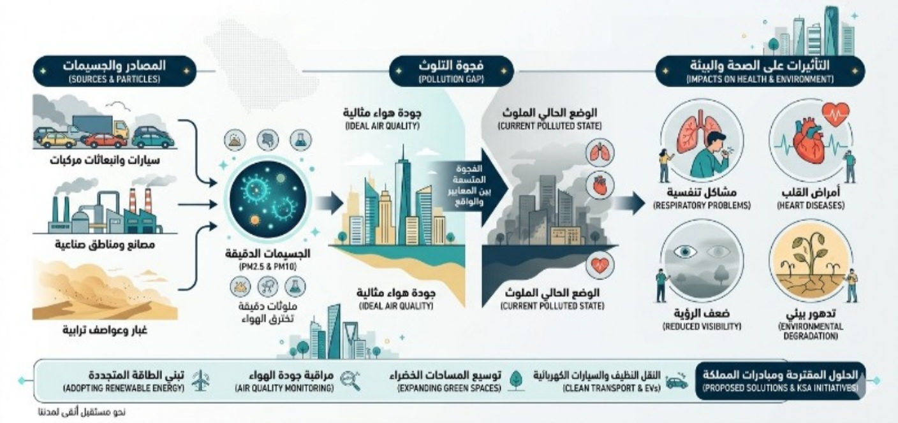
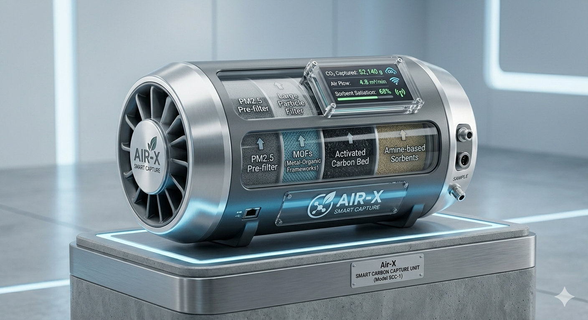
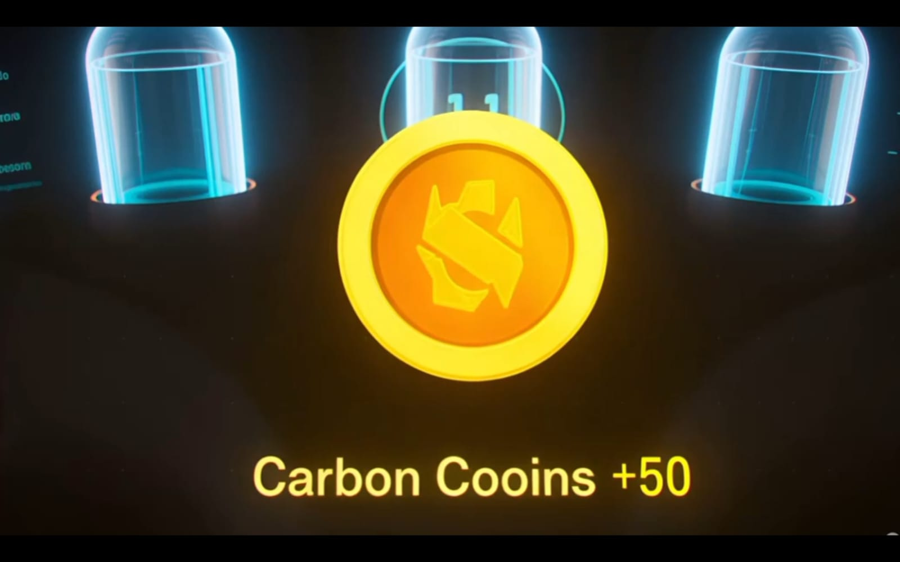

العرض التوضيحي للمشروع والمنظومة الذكية
منظومة العمل البشرية لـ "نماء"

حوراء ضياء العلي
قائد الفريق
نوراء مجيد الصالح
المدير المالي
لين بسام القطيفي
المدير المالي
حلا عادل الملحم
إدارة التشغيل
فاطمه علاء الحسن
مسؤول الابتكار
بيان المشكلة: ما الذي يخنق مدننا ويعطل الاستثمار الأخضر؟
إذا أردنا أن نكون صادقين، فإن صعود السيارات الكهربائية (EVs) في شوارعنا—رغم أهميته الهائلة—إلا أنه يحل نصف المشكلة فقط. السيارة الكهربائية ممتازة في عدم إصدار انبعاثات جديدة، لكنها تقف "عاجزة" تماماً أمام ملايين الأطنان من الكربون والسموم الموجودة بالفعل في هوائنا والتي نستنشقها كل ثانية.
لنفكك هذه الأزمة على كافة المستويات لنرى أين تكمن الفجوة الحقيقية:

1. على المستوى البيئي والصحي (الخطر الصامت في شوارعنا)
في المدن السعودية الكبرى كالرياض وجدة والمنطقة الشرقية، تلتقي الانبعاثات الكربونية الناتجة عن الكثافة المرورية مع الطقس الصحراوي الجاف والمغبر. النتيجة؟ هواء ثقيل محمل بجزيئات ثاني أكسيد الكربون (CO₂)، وغازات ثاني أكسيد النيتروجين (NO₂)، والجسيمات الدقيقة (PM2.5). هذه الجسيمات الدقيقة تحديداً خطيرة جداً لأنها تتجاوز دفاعات الجسم الطبيعية وتصل إلى أعماق الرئتين ومجرى الدم، مما يرفع من معدلات الحساسية والأمراض التنفسية والقلبية بشكل مباشر بين سكان المدن.
2. على المستوى التقني والهندسي (أزمة الحلول الحالية)
عندما فكر العالم في حل هذه المشكلة، اتجه نحو إنشاء محطات ضخمة وثابتة لالتقاط الكربون من الهواء المباشر (DAC). هندسياً، هذه محطات تعاني من فشل تجاري ذريع؛ فهي ضخمة، وثابتة في أماكن نائية، والأهم من ذلك أنها تستهلك كميات مرعبة من الطاقة الكهربائية لمجرد تشغيل مراوح ضخمة تشفط الهواء. هذا يعني أننا "نحرق طاقة" لننظف الهواء، مما يجعل تكلفة احتجاز الطن الواحد من الكربون باهظة وغير مجدية اقتصادياً دون دعم حكومي مستمر.
3. على مستوى الاستثمار وسوق الكربون
اليوم، يتطلع المستثمرون والصناديق السيادية في المملكة بقوة نحو "الاقتصاد الدائري للكربون" تماشياً مع رؤية 2030 ومبادرة السعودية الخضراء. لكن المشكلة أن الكربون المحتجز من المصانع التقليدية غالباً ما يُنظر إليه كـ "نفايات" يراد التخلص منها وطمرها تحت الأرض، بدلاً من التعامل معه كـ "أصل مالي" أو مادة خام يمكن إعادة تدويرها وبيعها في السوق بمرونة.
دراسة السوق وتحليل المنافسين (رؤية 2026)
الاستثمار في تقنيات الاستدامة اليوم يمر بمرحلة ذهبية لم يسبق لها مثيل، والسبب هو القوانين البيئية الصارمة، والتوجه العالمي والمحلي نحو التخلص من الكربون. مشروعنا يقوم على سوقين متداخلين ينموان بسرعة فائقة هذا العام (2026): سوق السيارات الكهربائية وسوق احتجاز الكربون واستخدامه وتخزينه (CCUS).
أولاً: حجم السوق والحاجة المتزايدة في 2026
الفجوة الكربونية محلياً
أحدث البيانات لعام 2026 تقول إن انبعاثات المملكة العربية السعودية وصلت إلى حوالي 713 مليون طن من ثاني أكسيد الكربون، وتتحمل وسائل النقل وحده مسؤولية 141 مليون طن منها.
النمو السريع لسوق احتجاز الكربون
على المستوى العالمي، تجاوز حجم سوق احتجاز الكربون هذا العام حاجز 5.85 مليار دولار، ويتوقع الخبراء أن ينمو بمعدل سنوي مركب (CAGR) يتخطى 25% ليصل إلى حوالي 55 مليار بحلول 2035.
الطفرة التشريعية داخل المملكة
مع تشغيل منصات تداول الكربون الإقليمية في السعودية كأدوات مالية معتمدة، تحولت شهادات خفض الانبعاثات إلى أصول نقدية تتنافس عليها الشركات الكبرى.
ثانياً: المشهد التنافسي وتحليل المنافسين
المنافسة حالياً في هذا القطاع الناشئ تتركز في اتجاهين رئيسيين، وكلاهما يعاني من عيوب جوهرية نلخصها في المقارنة التالية:
| وجه المقارنة | الشركات العالمية للأنظمة الثابتة (مثل Climeworks) | فلاتر سيارات الاحتراق الداخلي القديمة | ابتكارنا (الكبسولة الذكية المتنقلة) |
|---|---|---|---|
| تكلفة البنية التحتية | باهظة جداً (شراء أراضٍ وبناء محطات خرسانية ضخمة) | منخفضة (تُركب في عوادم السيارات القديمة) | صفر (أساطيل السيارات في الشوارع هي البنية التحتية) |
| استهلاك الطاقة | مرتفع ومرعب (حرق طاقة مستمر لتشغيل مراوح الشفط) | تعتمد على ضغط المحرك (تسبب جهداً إضافياً) | صفر طاقة (استغلال ديناميكي مجاني لـ Ram-Air Effect) |
| موقع تنظيف الهواء | ناشئ في أماكن نائية وصحاري بعيدة عن المدن | في العادم فقط لمنع خروج تلوث جديد | في بؤرة الحدث (الشوارع والأحياء السكنية المزدحمة) |
| الجدوى والنموذج المالي | تعتمد كلياً على الدعم الحكومي وتعتبر الكربون نفايات للحقن | تكنولوجيا من الماضي لا تناسب التوجه نحو الـ EVs | اقتصاد دائري حقيقي (أصل تجاري + Tokenomics للمستخدم) |
الحل المقترح: المنظومة الكبسولية المدمجة والذكية
يقدم المشروع حل (Smart Modular Capsule)، وهي وحدة هندسية مستقلة تماماً تُثبت خلف المصد الأمامي للمركبة الكهربائية دون إحداث أي تشويه في تصميمها الخارجي.
آلية العمل التنافسية
- احتجاز ديناميكي مجاني الطاقة: بدلاً من بناء محطات ثابتة ومراوح تستهلك الكهرباء، نحن نستغل حركة السيارة الطبيعية على الطريق. تقنية "تأثير الهواء المندفع" (Ram-Air Effect) تدفع الهواء بقوة وبالمجان إلى داخل الكبسولة الذكية أثناء القيادة، مما يجعل البصمة الطاقية لعملية الشفط تساوي صفر%، ودون أي تأثير على مدى بطارية السيارة.
- التنقية في بؤرة الحدث: الكبسولة تنظف الهواء في الشوارع المزدحمة ووسط الأحياء السكنية (حيث يتنفس الناس فعلياً)، وليس في صحاري نائية، عبر استخدام الأطر المعدنية العضوية النانوية المتطورة (MOFs) لاقتناص وعزل جزيئات الكربون بدقة متناهية.


- من منتج ملوث إلى أصل تجاري: الكربون المحتجز يتميز بنقاوته العالية، مما يسهل بيعه فوراً لشركات البناء الأخضر لحقنه في الخرسانة المستدامة لمشاريع نيوم وروشن، أو تحويله لعملات كربونية رقمية (Carbon Credits) تباع في سوق الكربون الطوعي الإقليمي بالمملكة.
نقاط التميز والابتكار في المشروع
يستمد المشروع تميزه من إعادة تعريف العلاقة بين التكنولوجيا البيئية وحركة المدن؛ حيث لا يكتفي بتقديم حل بديل، بل يخلق منظومة متكاملة تفوق الحلول الحالية عبر النقاط التالية:
1. انتقال هندسي من "الحياد" إلى "الأثر السلبي المستهدف"
السيارات الكهربائية التقليدية تمنع انبعاث كربون جديد (صفر انبعاثات)، بينما ابتكارنا يحول المركبة إلى أداة تطهير نشطة تسحب الكربون الموجود بالفعل في الغلاف الجوي، محققاً مفهوم "الأثر الكربوني السلبي المستهدف" (Targeted Carbon-Negative Impact).
2. تصفير البصمة الطاقية للاحتجاز (Zero-Energy Penalty)
تتطلب محطات احتجاز الكربون الثابتة (DAC) طاقة هائلة لتشغيل مراوح الشفط. لذا ابتكارنا يحل هذه المعضلة هندسياً عبر نظام الهواء المندفع (Ram-Air System) الذي يستغل الطاقة الحركية المتولدة طبيعياً من حركة السيارة، مما يجعل تكلفة تشغيل النظام طاقياً تساوي صفر%، ويحافظ تماماً على مدى بطارية السيارة (Driving Range).
3. اللامركزية والقرب من بؤر التلوث (Hyper-Local Capture)
فبدلاً من بناء محطات ضخمة في مناطق نائية، يتم التقاط الكربون والغازات السامة (CO₂, NO₂, PM2.5) في قلب المدن والشوارع المزدحمة، أي في الأماكن التي يتنفس فيها الإنسان وتتركز فيها الانبعاثات، مما يرفع كفاءة التنقية الصحية بفعالية أكبر.
4. التكامل الرقمي والتوأمية البيئية (Eco-Routing IoT)
الابتكار ليس مجرد فلاتر ميكانيكية، بل شبكة ذكية متصلة بإنترنت الأشياء (IoT). تتحول كل سيارة إلى "محطة رصد متنقلة" تساهم في بناء خريطة تلوث حية للمدينة، وتوجه السائقين عبر خوارزميات الملاحة الذكية إلى المسارات الأكثر احتياجاً للتنقية.
5. منظومة الاقتصاد الدائري المحفز (Tokenomics)
ربط الأثر البيئي بعوائد استثمارية وتشغيلية مباشرة للمستهلك عبر تقنية البلوكشين؛ حيث يتم تحويل الكربون المحتجز إلى أصول رقمية وعملات بيئية تمنح السائق خصومات مادية (شحن، تأمين، رسوم)، مما يضمن استدامة سلوك الاستبدال والتفاعل المجتمعي.
التقنيات والأدوات المستخدمة (The Tech Stack)
ينقسم الهيكل التقني للمشروع إلى جانبين متكاملين: الهندسية الكيميائية، والبرمجية الذكية.
أولاً: التقنيات الهندسية والكيميائية (Hardware)
- نظام التوجيه الديناميكي الهوائي (Ram-Air Intake): قنوات ومداخل هوائية مصممة انسيابياً للاستفادة من الضغط الطبيعي الناتج عن حركة المركبة لتمرير الهواء مجاناً.
- الأطر المعدنية العضوية (MOFs): مركبات نانوية مسامية متطورة للغاية وعالية الكفاءة لاحتجاز وعزل جزيئات CO₂ بدقة متناهية.
- الكربون المنشط (Activated Carbon): لزيادة مساحة السطح الماص للملوثات وجزيئات الغاز داخل الكبسولة.
- المذيبات القائمة على الأمين (Amine-based Sorbents): لالتقاط واقتناص الكربون بشكل نوعي وتحفيز التفاعلات الكيميائية للفصل والتخزين لاحقاً.
- مرشحات التنقية الميكانيكية: فلاتر أولية ذكية ومتقدمة لحجز الأتربة والرمال وحماية المواد النانوية الداخلية من التلف.
ثانياً: التقنيات البرمجية والشبكية (Software & IoT)
- شبكة الاستشعار البيئية (IoT Sensors): حساسات متطورة ومدمجة بالمركبة لقياس تركيز غازات CO₂ وNO₂ والجسيمات الدقيقة PM2.5 بلحظة القيادة.
- المنصة السحابية والاتصال (Cloud Platform): لربط الحساسات عبر إنترنت الأشياء (IoT) ونقل البيانات البيئية اللحظية من السيارات كشبكة رصد متحركة.
- خوارزمية التوجيه الأخضر (Eco-Routing Algorithm): خوارزمية ذكية مدمجة بنظام الملاحة (GPS) لتحليل بيانات التلوث الجوي المباشرة واقتراح المسارات الأكثر تلوثاً لتنظيفها.
- تقنية البلوكشين (Blockchain Technology): لتوثيق وتتبع جزيئات الكربون المحتجزة بدقة وتحويلها بأمان إلى عملات بيئية رقمية (Carbon Credits) في محفظة السائق.
كيف يقدم الحل قيمة فعلية لمستخدمي السيارات الكهربائية؟
تحول هذه المنظومة تجربة قيادة السيارة الكهربائية من مجرد وسيلة نقل "محايدة بيئياً" إلى "أداة نشطة لتطهير الغلاف الجوي"، مما يمنح المستخدم قيمًا فعلية ومزايا استثنائية تتجاوز مجرد التنقل المستدام:
💰 أولاً: القيمة المالية والاقتصادية المباشرة
تسييل الكربون المحتجز (Tokenomics): لا يُطلب من قائد المركبة المساهمة البيئية بالمجان؛ فالكربون الذي تحتجزه الكبسولة أثناء قيادته اليومية يُقاس رقمياً ويتحول فوراً عبر تطبيق ذكي إلى "عملات بيئية رقمية" (Carbon Credits).
عوائد تشغيلية مجزية تشمل:
- خصومات مباشرة ومجزية على فواتير شحن الطاقة الكهربائية للمركبة.
- تخفيضات على رسوم الطرق والخدمات اللوجستية المرتبطة بالمركبات.
- مزايا تفضيلية وتخفيضات على أقساط تأمين المركبات السنوية بالتعاون مع شركات التأمين الأخضر.
⚙️ ثانياً: القيمة التشغيلية والهندسية
حماية مدى البطارية (Zero Energy Penalty): التحدي الأكبر لمستخدمي السيارات الكهربائية هو الحفاظ على "مدى القيادة". يقدم هذا الحل قيمة جوهرية عبر تصفير استهلاك الطاقة؛ فعملية تدفق الهواء والاحتجاز تتم ديناميكياً بفعل حركة السيارة ولا تسحب إنشاً واحداً من طاقة البطارية الأساسية أو تؤثر على تسارعها.
مرونة الاستبدال وسهولة الصيانة (Plug-and-Play): صُممت الكبسولة بخاصية الاستبدال السريع الذكي. عند امتلائها، يتلقى السائق إشعاراً عبر نظام الملاحة، ويتم استبدالها في غضون ثوانٍ معدودة داخل محطات الشحن القائمة، دون أي عناء تقني.
🫁 ثالثاً: القيمة الصحية والبيئية الشخصية
رئة نقية للمستخدم وعائلته: تعمل الفلترة الأولية الميكانيكية للنظام على تنقية الهواء المحيط بالمركبة من الأتربة والجسيمات الدقيقة الضارة (PM2.5) والغازات السامة مثل (NO₂) المنتشرة في شوارع المدن المزدحمة. هذا يضمن للمستخدم عزل عائلته وبيئته المباشرة أثناء القيادة عن بؤر التلوث الحضرية.
القيادة ذات الأثر الإيجابي الفعلي: تمنح هذه التكنولوجيا المستخدم شعوراً حقيقياً بالريادة والمواطنة البيئية؛ فبدلاً من كونه "محايداً"، يصبح عنصراً فاعلاً يطهر مدينته بنشاط مع كل كيلومتر يقطعه، مما يعزز مساهمته الفردية في تحقيق أهداف "مبادرة السعودية الخضراء".
مراحل التطوير المستقبلية والتوسع (Future Roadmap)
تم تصميم مشروع "نماء" ليتوسع على مراحل استراتيجية مرنة ومدروسة، تضمن الانتقال من فكرة كبسولة ذكية إلى منظومة بيئية وبياناتية شاملة تخدم مدن المستقبل بالمملكة.
التوسع اللوجستي وتطوير الـ Kit العالمي
إطلاق وحدات الـ Kit الملحقة (Retrofitting): التركيز على إنتاج الكبسولة كوحدة مستقلة (Universal Plug-and-Play Kit) قابلة للتركيب على جميع السيارات الكهربائية الحالية وحافلات النقل العام وسيارات الأجرة دون الحاجة لتغيير التصميم الهيكلي للمركبات.
بناء نقاط التبادل الذكية: تكامل النظام مع محطات الشحن القائمة لتحويلها إلى نقاط استبدال سريعة للكبسولات الممتلئة بأخرى فارغة في ثوانٍ معدودة.
التوسيع الكيميائي الشامل (Beyond CO₂)
الانتقال للتنقية الشاملة: بعد تمكين احتجاز CO₂ بنجاح كمرحلة أساسية، سيتم ترقية التصميم الداخلي للركام النانوي في الكبسولة مستقبلاً لاستيعاب غازات أخرى ملوثة للمدن مثل أكاسيد النيتروجين (NO₂)، وأكاسيد الكبريت، وحبس الغبار الدقيق (PM2.5) بشكل كامل.
الفرز الآلي للغازات: تطوير الكبسولة لتقوم بفرز وفصل كل غاز مجموع على حدة، لتسهيل عملية توجيهه للصناعة الخاصة به (النيتروجين للأسمدة، والكربون للخرسانة والوقود الصناعي).
الذكاء الاصطناعي التنبؤي والبيانات الضخمة
التنبؤ ببؤر التلوث: استخدام الذكاء الاصطناعي وتحليل البيانات الضخمة المجمعة من أساطيل السيارات للتنبؤ بمناطق التلوث الكربوني قبل حدوث الازدحام وتوجيه السيارات إليها مسبقاً.
الربط مع البنية التحتية للمدن الذكية: دمج المنصة الرقمية للمشروع مع أنظمة إدارة المدن الذكية في المملكة (مثل نيوم وذا لاين) لتوفير خرائط حرارية حية للتلوث تدعم صناع القرار في التخطيط البيئي والحضري.
التحديات والمشكلات الفنية (بكل شفافية ومصداقية علمية)
لأننا نتحدث بلغة هندسية واستثمارية جادة، واجهنا مجموعة من التحديات التقنية والبيئية المرتبطة بطبيعة السوق والمناخ المحلي، وتم التغلب عليها عبر حلول هندسية مبتكرة:
1. تحدي المناخ الصحراوي (الغبار والأتربة العالقة)
المشكلة: الأجواء في المملكة تتميز بالرياح المغبرة والأتربة الدقيقة. هذه الجسيمات كان يمكن أن تسد المسامات النانوية للأطر المعدنية العضوية (MOFs) بسرعة، مما يتلف الكبسولة ويفقدها قدرتها الامتصاصية خلال أيام قليلة.
2. معضلة الوزن، المساحة، والكفاءة الامتصاصية
المشكلة: لكي تتمكن السيارة من التقاط كميات مؤثرة من الكربون، كانت الأنظمة التقليدية تتطلب كبسولات ضخمة وثقيلة الوزن، مما يخل بالديناميكية الهوائية للمركبة (Aerodynamics) ويزيد من استهلاك طاقة البطارية بسبب الوزن الزائد.
3. التحدي اللوجستي وسلوك المستخدم (ضمان استمرارية الاستبدال)
المشكلة: نجاح المشروع يعتمد على قيام السائق باستبدال الكبسولة فور امتلائها بانتظام. غياب الحافز أو صعوبة عملية الصيانة كان يمكن أن يؤدي إلى إهمال النظام وتحوله إلى وحدة غير مفعلة في السيارة.